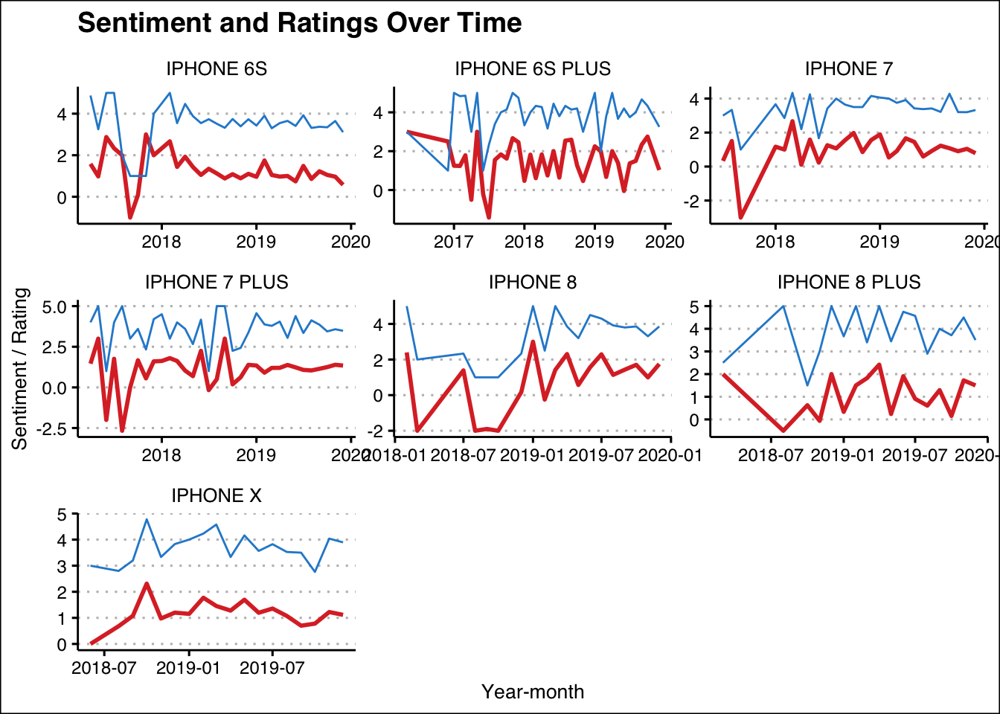
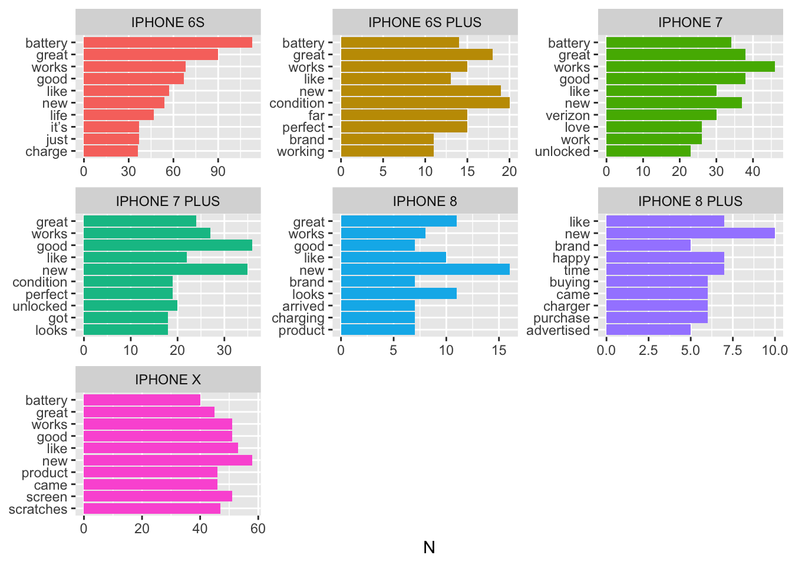
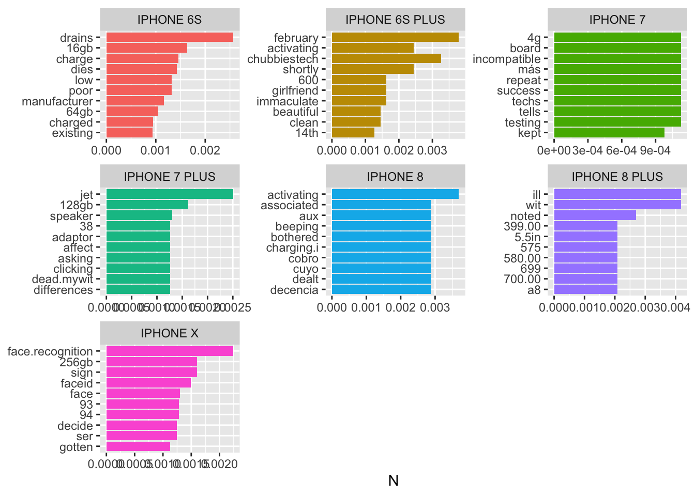
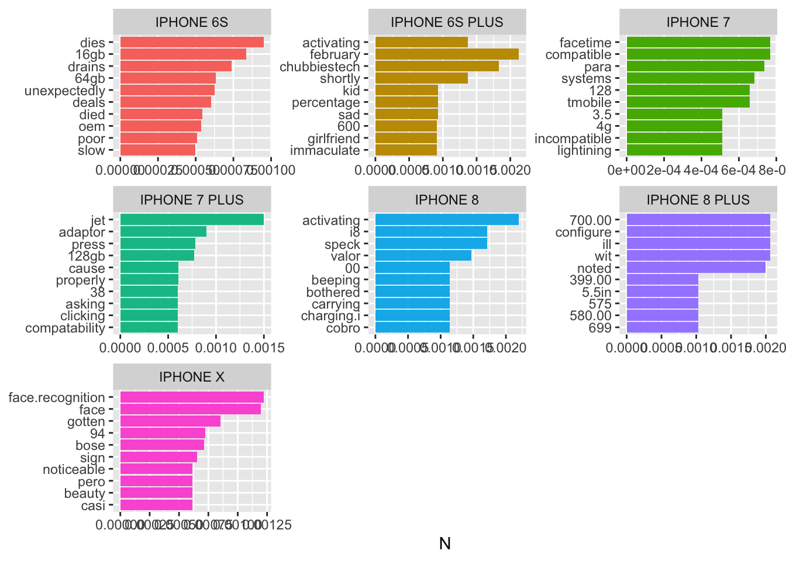

library(tidyverse)
library(tidytext)
library(lubridate)
library(ggthemes)
library(SnowballC)Text Mining Problem Set
In this problem set, we’ll use Amazon reviews on Apple smart phones to measure some market sentiment and thoughts about several iPhone models. We have two data files, one with the reviews, and one with some product information. After merging the two files we can begin to filter them out for the products we’re interested in and than begin our analysis.
After prepping the data, we will attempt to help solve a couple of business problems.
- The customer satisfaction team would like to see a dashboard of customer sentiment over time for each of the designated iPhone products. So we will try to provide some measure of sentiment from the reviews (say monthly) and show a time series graph of the data over time. Additionally, the average star rating of reviews in a given period may also be a measure of sentiment and so we will include this as well. Customer satisfaction teams can then look at the graphs to identify trends, dips, spikes, and divergences between sentiment and star-rating.
- The second task will be to use the reviews to identify key words that describe reviews and the distinct iPhone models. We will attack the problem from several angles, all by calculating TF-IDF statistics on batches of words. A. We will use tf-idf score to identify the top 10 words describing each individual review and then keep only those words. Then we will aggregate the results of for each interview for a given product by finding the 10 most popular individual-review keywords. This approach will show us the most popular keywords within product. B. Instead of aggregating the TF-IDF selected words from each review by counting/summing, we can calculate TF-IDF values of the individual-review top words by product. This approach will help find those review key words which are most important for each product. C. Finally, we could calculate TF-IDF values treating all the review-words for a single product as one big bag-of-words. This approach will yield a slightly different set of words.
reviews = read_csv("20191226-reviews.csv") %>%
rownames_to_column(var = "review.ID") %>%
select(-name, -verified, -title)items = read_csv("20191226-items.csv") %>%
select(asin, brand, title)A great deal of data cleaning and preparation is required for good text analysis. We first merge the data sets by the product ID “asin” which attaches product name and features to each review in the data. Then we begin to filter out for only apple branded products and then finally those with “iPhone” in the product name. Looking that the body feature we have the text of each review. It is clear that a great variety of product name and formatting exists. However, there are some common patterns we can leverage using regular expressions.
- We know we’re looking at Apple products, so we don’t need the word “Apple” in the product name and the pattern “Apple” shows up in the product names, and so we replace it with an empty string to remove it.
- The second patter that we become aware of is that the product name is mentioned and then specific attributes of a model (like storage size, etc.) is placed after a comma. We don’t wish to distinguish these, so will use a regular expression pattern “1*” meant to grab us any set of character and numbers from the beginning of the product name up to the comma.
- We are going to try and look at sentiment over time, and so we will process the date of each review as a date datatype and then extract the month-year form. This way we can aggregate all reviews for a product within a particular month.
apple_reviews = left_join(reviews, items, by = "asin") %>%
rename(product = title) %>%
filter(brand == "Apple") %>%
filter(str_detect(product, "iPhone")==TRUE) %>%
mutate(p2 = str_replace(product, "Apple ", "")) %>%
mutate(p2 = str_extract(p2, regex("^[^,]*"))) %>%
select(-product) %>%
rename(product = p2) %>%
mutate(date = lubridate::mdy(date)) %>%
mutate(year = lubridate::year(date),
month = lubridate::month(date)) %>%
mutate(ym = paste(year, month, sep="-")) %>%
mutate(ym = lubridate::ym(ym))
apple_reviews %>%
count(product) # A tibble: 25 × 2
product n
<chr> <int>
1 Verizon Prepaid - iPhone 6S (32GB) - Space Gray 2
2 iPhone 11 1
3 iPhone 11 Pro 1
4 iPhone 6S 1204
5 iPhone 6S Plus 245
6 iPhone 7 449
7 iPhone 7 256GB Unlocked GSM 4G LTE Quad-Core Smartphone - Jet Black (R… 7
8 iPhone 7 256GB Unlocked GSM 4G LTE Quad-Core Smartphone - Rose Gold (R… 2
9 iPhone 7 32GB 370
10 iPhone 7 Plus 109
# … with 15 more rowsAbove we can see the list of iPhone products and realize that a lot of cleaning still remains to be done. 1. Remove storage size references, like any string of numbers starting after a space and followed by “GB”. 2. Remove leading text like “Verizon Prepaid”… 3. Remove other text which follows a size reference (everything after GB). 4. Then remove other things occurring rarely, but which are problematic.
apple_reviews = apple_reviews %>%
mutate(product = str_replace(product, " [0-9]*GB(.+)", "")) %>%
mutate(product = str_replace(product, "[0-9]*GB$", "")) %>%
mutate(product = str_replace(product, "^Verizon Prepaid - ", "")) %>%
mutate(product = str_replace(product, "\\([0-9]*GB(.+)", "")) %>%
mutate(product = str_replace(product, "a1905", "")) %>%
mutate(product = str_trim(str_to_upper(product)))
apple_reviews %>%
count(product, sort = TRUE)# A tibble: 13 × 2
product n
<chr> <int>
1 IPHONE 6S 1206
2 IPHONE X 1194
3 IPHONE 7 828
4 IPHONE 7 PLUS 479
5 IPHONE XS MAX 333
6 IPHONE XS 262
7 IPHONE 6S PLUS 245
8 IPHONE 8 188
9 IPHONE 8 PLUS 140
10 IPHONE SE 63
11 IPHONE XR 10
12 IPHONE 11 1
13 IPHONE 11 PRO 1The scrubbed product list is now shown above. The product names are much cleaner and follow a similar naming convention. We’re now ready to start analyzing the review text.
We start by filtering so that we retain only reviews about a select batch of iPhone models. It is these models we wish to assess the market thoughts and sentiment.
apple_reviews = apple_reviews %>%
filter(product %in% c("IPHONE 6S", "IPHONE 6S PLUS", "IPHONE 8",
"IPHONE 8 PLUS", "IPHONE 7",
"IPHONE 7 PLUS", "IPHONE X"))
apple_reviews %>%
count(product, sort = TRUE)# A tibble: 7 × 2
product n
<chr> <int>
1 IPHONE 6S 1206
2 IPHONE X 1194
3 IPHONE 7 828
4 IPHONE 7 PLUS 479
5 IPHONE 6S PLUS 245
6 IPHONE 8 188
7 IPHONE 8 PLUS 1401. View Sentiment vs. Rating Over Time
Our first
stop_words = get_stopwords()
review.words = apple_reviews %>%
mutate(body = str_to_lower(body)) %>%
mutate(body = str_replace(body, "face recognition", "face.recognition")) %>%
mutate(body = str_replace(body, "facial recognition", "face.recognition")) %>%
mutate(body = str_replace(body, "audifonos", "headphones")) %>%
mutate(body = str_replace(body, "audífonos", "headphones")) %>%
unnest_tokens(word, body, token = "words") %>%
#anti_join(stop_words, by = "word") %>%
filter(!word %in% c("phone", "phones", "iphone",
"8", "8plus", "6", "6plus", "7", "6s",
"7plus", "x", "X", "plus",
"k", "que", "los", "telefono", "telephone",
"teléfono")) %>%
mutate(word = ifelse(word == "accesorio", "accessory", word)) %>%
mutate(word = ifelse(word == "accesorios", "accessories", word)) %>%
mutate(word = ifelse(word == "artículo", "article", word)) %>%
mutate(word = ifelse(word == "nuevo", "new", word)) %>%
mutate(word = ifelse(word == "pues", "well", word)) %>%
mutate(word = ifelse(word == "traba", "lock", word))Before, proceeding, lets look at the length of reviews to make sure we don’t have an abundance of short one-word reviews that may not reflect the type of review we’re interested in analyzing. Lets only keep with words with more than 5 words (before stop words removed).
review.words = review.words %>%
group_by(review.ID) %>%
mutate(numWords = n()) %>%
ungroup() %>%
filter(numWords > 5) %>%
anti_join(stop_words, by = "word")Now that we’re down to just our bag-of-words for each review, lets apply the “afinn” sentiment lexicon. After getting a sentiment score for each word in each review, we will calculate the average sentiment for each review by using the mean function on value when grouped by review.
library(textdata)
sent_words = get_sentiments("afinn")
review.sentiments = review.words %>%
inner_join(sent_words, by = "word") %>%
group_by(review.ID) %>%
mutate(sentiment = mean(value)) %>%
ungroup() %>%
select(review.ID, ym, product, rating, sentiment) %>%
distinct()Now that we’ve scored each review with a sentiment, we can aggregate all the reviews for each product in each month-year by averaging the reviews. For example, we will group by product and then year-month and the sentiment of all reviews for iPhone 8 in July 2019 will be averaged together to form an average sentiment score.
sentiment_overtime = review.sentiments %>%
group_by(product, ym) %>%
summarise(sentiment = mean(sentiment),
rating = mean(rating))`summarise()` has grouped output by 'product'. You can override using the
`.groups` argument.Now that sentiment and star-rating have been calculated over time, we can plot the result to complete our task and provide a kind of dashboard.
sentiment_overtime %>%
ggplot() +
geom_line(aes(x=ym, y=sentiment), color = "#dc322f", size = 1) +
geom_line(aes(x=ym, y=rating), color = "#268bd2") +
facet_wrap(~product, scales = "free") +
labs(title = "Sentiment and Ratings Over Time",
x = "Year-month", y = "Sentiment / Rating") +
theme_clean()Warning: Using `size` aesthetic for lines was deprecated in ggplot2 3.4.0.
ℹ Please use `linewidth` instead.
A.
When looking at the relationship between rating and sentiment over time, we can see how majority of the trends seems to follow one another. This type of behavior suggests a positive correlation for us to to view and use. This type of similar behavior allows us to see that customers are mainly expressing their sentiments in an accurte format in their ratings. It makes sense that these two trends result in similar behaviors. It is common to see high sentiment with high ratings, whereas low sentiment with low ratings.
There are some instances when divergence between sentiment and rating do take place. The biggest instance of this occurs in IPhone 8 Plus. This behavior can raise many questions. Possible reasons such as outliers, bias, or aspects not covered in the rating scale may be present. This creates room for uncertainty, therefore unanswered questions.
2. View Important Words for Each Product
We will use TF-IDF measures to identify key words for a review.
Part A: Calculate top TF-IDF Words for each Review
We will set individual reviews as our “document” level, so that term frequency is with respect to a review and inverse-document frequency across all reviews. Note that each review is uniquely identified by review.ID.
tfidf = review.words %>%
count(review.ID, word, sort = TRUE) %>%
bind_tf_idf(word, review.ID, n)
arrange(tfidf, desc(tf_idf))# A tibble: 58,279 × 6
review.ID word n tf idf tf_idf
<chr> <chr> <int> <dbl> <dbl> <dbl>
1 42033 supposed 1 1 4.77 4.77
2 48836 supposed 1 1 4.77 4.77
3 32134 adaptor 1 0.5 7.41 3.71
4 41822 matters 1 0.5 7.00 3.50
5 48625 matters 1 0.5 7.00 3.50
6 31822 dislike 1 0.5 6.72 3.36
7 31897 met 1 0.5 6.16 3.08
8 25033 asked 1 0.5 5.62 2.81
9 37706 conditions 1 0.5 5.46 2.73
10 31107 breathe 1 0.333 8.10 2.70
# … with 58,269 more rowsAbove we calculated the TF-IDF score of each word in each review. This score says something about the importance of each word in the review it was from. We will now characterize each review by the top 5 words by TF-IDF and keep only those words.
reviews.tfidf = tfidf %>%
left_join(apple_reviews, by = "review.ID") %>%
select(review.ID, product, word, tf_idf, rating) %>%
group_by(review.ID) %>%
slice_max(order_by = tf_idf, n = 10, with_ties = TRUE) %>%
ungroup()
reviews.tfidf# A tibble: 28,242 × 5
review.ID product word tf_idf rating
<chr> <chr> <chr> <dbl> <dbl>
1 20539 IPHONE 6S PLUS noticable 1.24 5
2 20539 IPHONE 6S PLUS barely 0.821 5
3 20539 IPHONE 6S PLUS minor 0.705 5
4 20539 IPHONE 6S PLUS scratches 0.380 5
5 20539 IPHONE 6S PLUS screen 0.327 5
6 20539 IPHONE 6S PLUS great 0.295 5
7 20540 IPHONE 6S PLUS ti 1.62 1
8 20540 IPHONE 6S PLUS hace 1.30 1
9 20540 IPHONE 6S PLUS doesn’t 0.679 1
10 20540 IPHONE 6S PLUS return 0.623 1
# … with 28,232 more rowstopwords = reviews.tfidf %>%
#filter(rating < 4) %>%
count(product, word)
topwords.tfidf = reviews.tfidf %>%
count(product, word, sort = TRUE) %>%
bind_tf_idf(word, product, n)
topwords.tfidf# A tibble: 11,173 × 6
product word n tf idf tf_idf
<chr> <chr> <int> <dbl> <dbl> <dbl>
1 IPHONE 6S battery 113 0.0136 0 0
2 IPHONE 6S great 90 0.0108 0 0
3 IPHONE 6S works 68 0.00816 0 0
4 IPHONE 6S good 67 0.00804 0 0
5 IPHONE X new 58 0.00743 0 0
6 IPHONE 6S like 57 0.00684 0 0
7 IPHONE 6S new 54 0.00648 0 0
8 IPHONE X like 53 0.00679 0 0
9 IPHONE X good 51 0.00654 0 0
10 IPHONE X screen 51 0.00654 0 0
# … with 11,163 more rows
product.tfidf = review.words %>%
count(product, word, sort = TRUE) %>%
bind_tf_idf(word, product, n)
product.tfidf# A tibble: 13,338 × 6
product word n tf idf tf_idf
<chr> <chr> <int> <dbl> <dbl> <dbl>
1 IPHONE 6S battery 504 0.0270 0 0
2 IPHONE X new 301 0.0158 0 0
3 IPHONE 6S new 267 0.0143 0 0
4 IPHONE X screen 250 0.0131 0 0
5 IPHONE 6S great 217 0.0116 0 0
6 IPHONE X battery 204 0.0107 0 0
7 IPHONE X like 202 0.0106 0 0
8 IPHONE 6S good 197 0.0105 0 0
9 IPHONE X came 186 0.00974 0 0
10 IPHONE 6S like 183 0.00980 0 0
# … with 13,328 more rows
B.
When using the keyword plots for the first method, we can see quite a few positive words. The top word for a few of the products seems to be battery. This makes sense since a phone’s battery is a big factor that customers take into consideration when purchasing products.
When we filter out the good reviews, such as 4 and 5 star reviews, a lot of the words are now more associated on the negative side. We can see words such returned and scratches.
For the second method, we can see keywords that occur across reviews within a specific product. Each product has different keywords being presented and it shows how different each product may be from one another. For example, for the IPhone X, the top keyword is face recognition. We can see an increase in gb from product as well as the keywords for certain gb increases in number. This makes sense for products continuously have new advancements done to them as the next product releases.
When it comes to the general theme of the keywords, we can assume that many of the problems people may have on these products depends on the external and internal problems t hat may occur to the phone. Development of features on products and storage is also something we can see is increased within ratings. Overall, we see how important factors regarding such keywords to features, updates and changes to phones, battery life, and compatibility are some of the main topics being discussed in ratings. When marking and developing ideas and coming up with recommendation, these such factors could positively increase customer engagement and ratings significantly.
Footnotes
^,↩︎